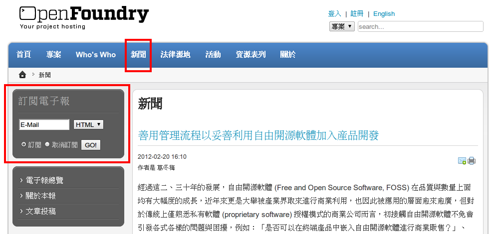
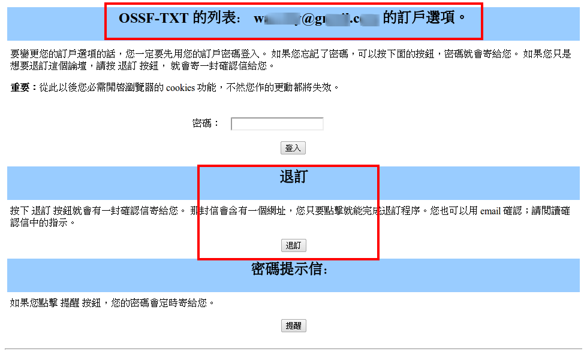
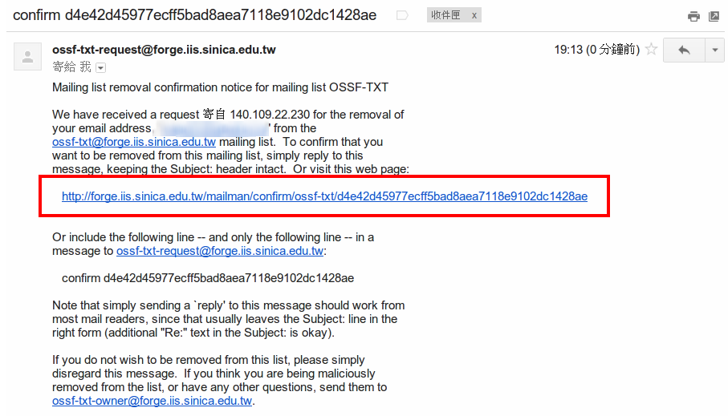
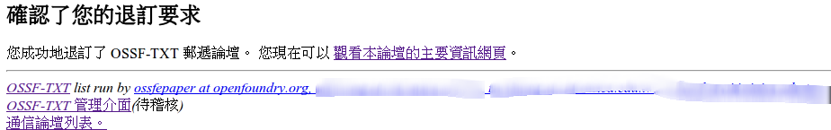

感謝您對「自由軟體鑄造場」的支持與愛護，十多年來「自由軟體鑄造場」受中央研究院支持，並在資訊科學研究所以及資訊科技創新研究中心執行，現已完成階段性的任務。 原網站預計持續維運至 2021年底，網站內容基本上不會再更動。本網站由 Denny Huang 備份封存。
也紀念我們永遠的朋友 李士傑先生（Shih-Chieh Ilya Li）。
也紀念我們永遠的朋友 李士傑先生（Shih-Chieh Ilya Li）。
退閱步驟
1. 請連至本站或 新聞 於畫面左側的 「訂閱電子報」功能輸入您的mail及您欲退閱的電子報類型(HTML 或TXT) ，選擇「取消訂閱」按下「GO!」

2. 即會跳出您的訂閱選項畫面，請確認上方您輸入的mail為正確的資料後，按下下方的「退訂」按鈕，並至您的信箱收取退閱確認信

3. 請於您當時的訂閱信箱中，收取寄件者為
This e-mail address is being protected from spambots. You need JavaScript enabled to view it
或
This e-mail address is being protected from spambots. You need JavaScript enabled to view it
(依您退閱的電子報類別HTML 或 TXT 而定)，並依照信上的步驟直接回信或點選信上的退訂url至web 上確認退訂即可。
3.1 收取信箱標題為 「confirm xxxxxxx」的信箱 (xxx為系統亂數編碼)

3.2 點選信上連結，至下方網頁位置，再次確認退訂E-Mail 後，即按下下方 [退訂] 即可。

4. 完成後，即畫面會出現您已完成退訂程序，而後續電子報則不會再寄至您的退訂信箱了。

Open Source Software Foundry‧ Best Viewed with IE7.0 or Firefox2.0 above, 1024x768 Resolution. E-Mail：contact@openfoundry.org
Address：No.128, Sec.2, Academia Rd., Institute of Information Science, Academia Sinica, Nangang District, Taipei City 11529, Taiwan (R.O.C).
Privacy Policy. Terms-of-use
Address：No.128, Sec.2, Academia Rd., Institute of Information Science, Academia Sinica, Nangang District, Taipei City 11529, Taiwan (R.O.C).
Privacy Policy. Terms-of-use